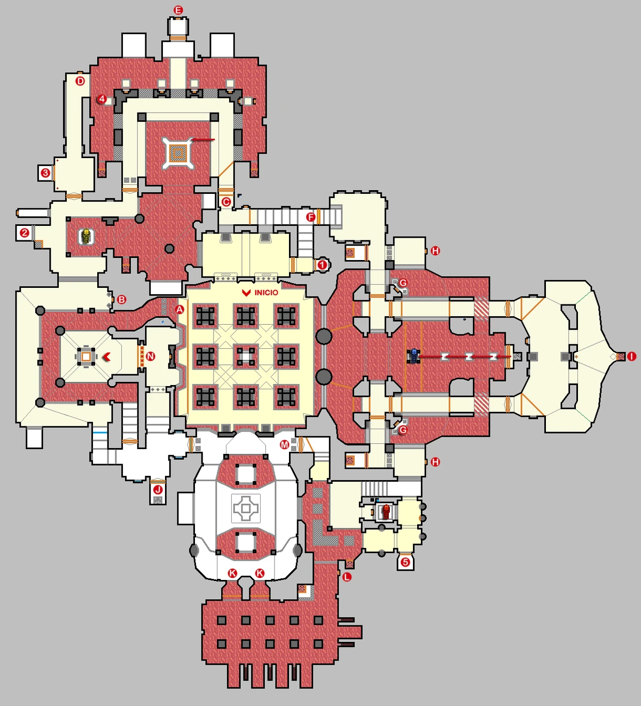
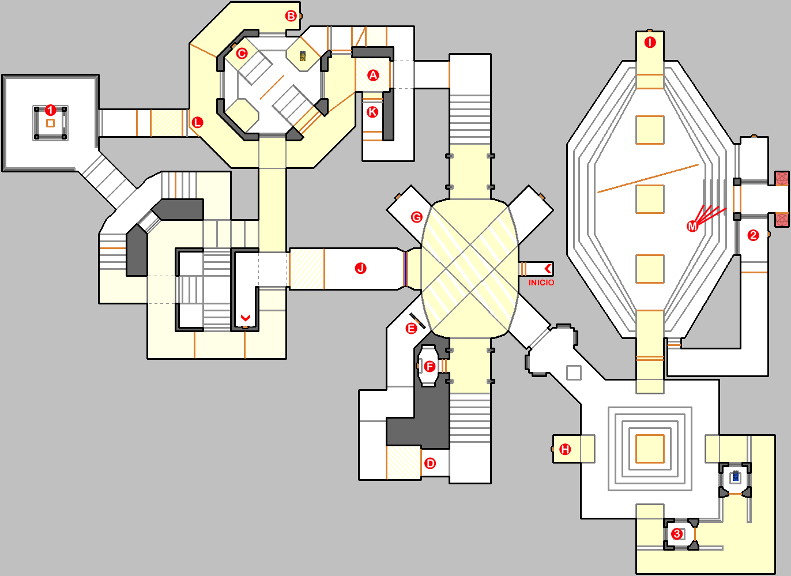
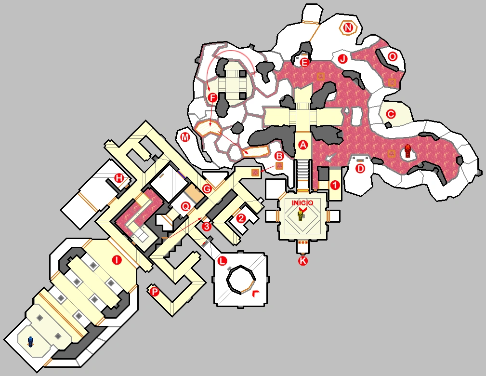

Niveles de Doom 64
Mapas Principales
- MAP01: Staging Area
- MAP02: The Terraformer
- MAP03: Main Engineering
- MAP04: Holding Area
- MAP05: Tech Center
- MAP06: Alpha Quadrant
- MAP07: Research Lab
- MAP08: Final Outpost
- MAP09: Even Simpler
- MAP10: The Bleeding
- MAP11: Terror Core
- MAP12: Altar Of Pain
- MAP13: Dark Citadel
- MAP14: Eye Of The Storm
- MAP15: Dark Entries
- MAP16: Blood Keep
- MAP17: Watch Your Step
- MAP18: Spawned Fear
- MAP19: The Spiral
- MAP20: Breakdown
- MAP21: Pitfalls
- MAP22: Burnt Offerings
- MAP23: Unholy Temple
- MAP24: No Escape
- MAP28: The Absolution
Mapas Secretos
- MAP29: Outpost Omega (nivel secreto)
- MAP30: The Lair (nivel secreto)
- MAP31: In The Void (nivel secreto)
- MAP32: Hectic (nivel super secreto)
Mapas Especiales
- MAP25: Cat And Mouse (nivel oculto)
- MAP26: Hardcore (nivel oculto)
- MAP27: Playground (nivel oculto)


 Volver al índice